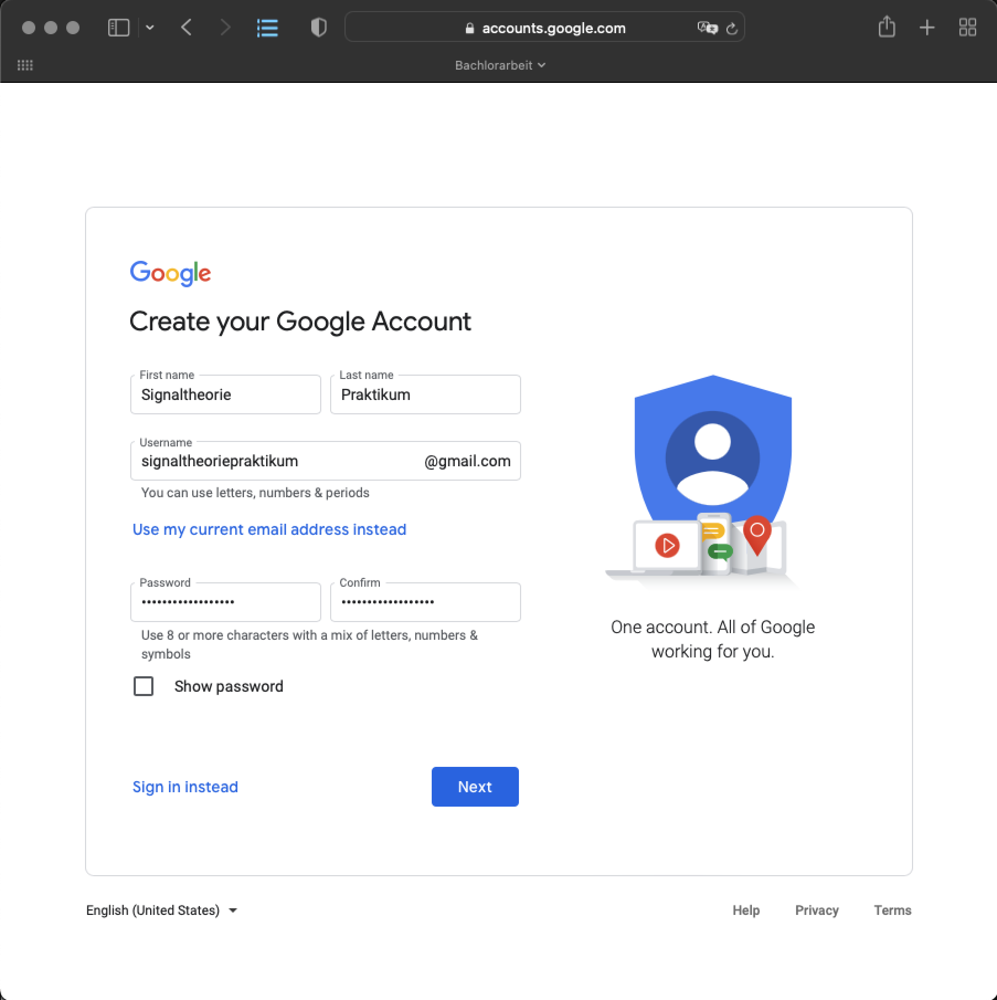
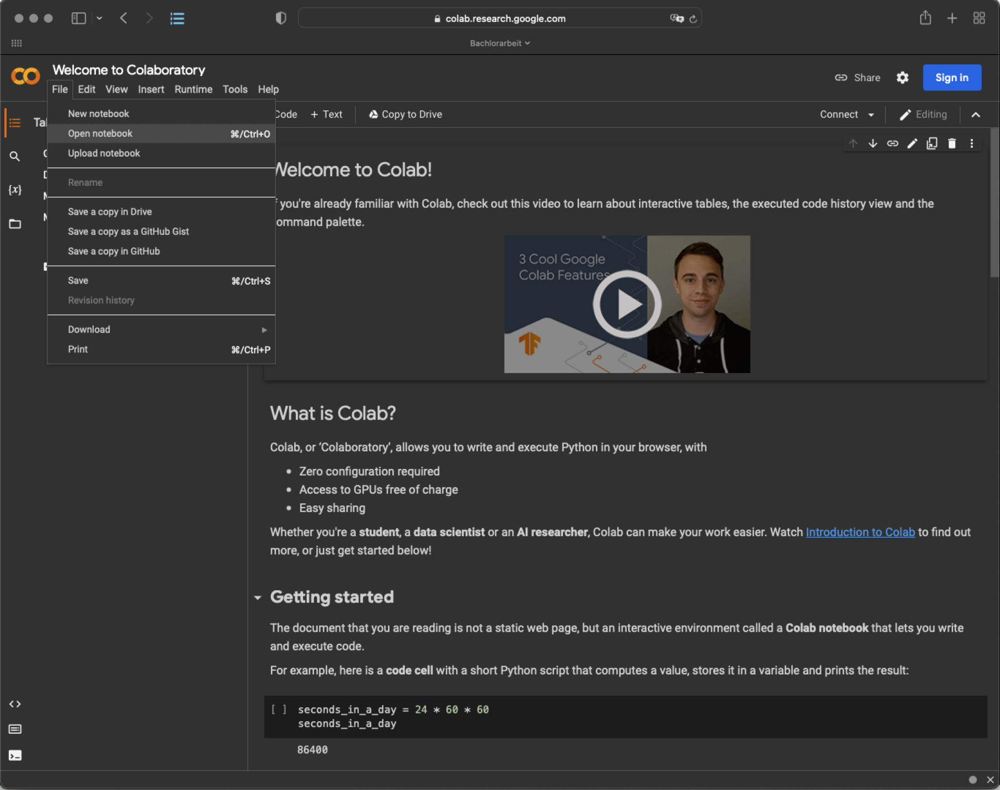

Google Colab ist eine cloud-basierte Entwicklungsumgebung, die eine umfassende Python-Umgebung direkt im
Webbrowser bereitstellt. Dadurch wird die lokale Installation von Software oder Bibliotheken
überflüssig, wodurch der Einstieg in die Programmierung und Datenanalyse erleichtert und
benutzerfreundlicher gestaltet wird.
Umgebungseinrichtung für das Praktikum
Python
Wir arbeiten mit Python. Diese Programmiersprache ist von Google entwickelt worden und
bietet als gescriptete, interpretierte Sprache eine Platform um schnell Ideen umzusetzen
und
Konzepte zu realisieren. Also so genannte Proof of Concepts. Wie wir hier auch merken
werden
ist Python eigentlich sehr langsam. Die Stärke liegt darin, dass Python erlaubt, sehr
einfach
Module aus anderen Programmiersprachen nutzbar zu machen. Python kümmert sich dabei um
den Programmablauf und die bespielsweise native C Anwendung führt die Berechnung durch.
Google Konto

Um am Praktikum teilzunehmen und Google Colab zu nutzen, ist ein Google-Konto
erforderlich.
Falls notwendig, erstelle einen temporären E-Mail-Account, um dich anschließend auf https://colab.research.google.com/
bei Google Colab anmelden zu können.
Google Colab
Google Colab ist eine Online-Plattform für Programmierung, die es Nutzern ermöglicht,
Python-Code in einer browserbasierten Umgebung auszuführen. Diese Plattform ist
kostenlos
verfügbar, bietet jedoch auch kostenpflichtige Optionen für erweiterte Funktionen und
Ressourcen. Um Google Colab nutzen zu können, wird lediglich ein Google-Konto und einen
Webbrowser benötigt, der Javascript unterstützt. Theoretisch wäre es somit möglich,
Google
Colab
auch auf unkonventionellen Geräten wie einer Smartwatch in Verbindung mit einem
RaspberryPi
zu
nutzen.

Jupyter Notebook
Ein Jupyter Notebook ist eine eigenständige Datei. Mittlerweile lässt es sich direkt in
Visual
Studio Code öffnen, lokal auf dem eigenen Computer über einen Server betreiben oder
sogar
über
den Webbrowser unter Zuhilfenahme externer Ressourcen nutzen. In unserem Praktikum
nutzen
wir
die kostenfreien Rechenkapazitäten von Google und führen unsere Programmierung direkt im
Webbrowser durch.
Um ein neues Notebook zu erstellen oder ein bereits vorhandenes aufzurufen, navigiert man zum Menü File oben links. Die für das Praktikum erforderlichen Jupyter Notebook-Dateien befinden sich im Notebook-Ordner des Signaltheorie-Kurses auf Ilu.
Zur Interaktion mit dem Notebook können nun unterschiedliche Zellentypen wie Markdown, Python oder einfache Textzellen erstellt werden. Nach Erstellung können diese Blöcke durch Drücken von SHIFT+ENTER ausgeführt bzw. gerendert werden. Alternativ können die ausgewählten Zelle auch über den Menüpunkt LAUFZEIT ausgeführt werden.
Um ein neues Notebook zu erstellen oder ein bereits vorhandenes aufzurufen, navigiert man zum Menü File oben links. Die für das Praktikum erforderlichen Jupyter Notebook-Dateien befinden sich im Notebook-Ordner des Signaltheorie-Kurses auf Ilu.
Zur Interaktion mit dem Notebook können nun unterschiedliche Zellentypen wie Markdown, Python oder einfache Textzellen erstellt werden. Nach Erstellung können diese Blöcke durch Drücken von SHIFT+ENTER ausgeführt bzw. gerendert werden. Alternativ können die ausgewählten Zelle auch über den Menüpunkt LAUFZEIT ausgeführt werden.
Google Drive
Für spätere Praktika wird es nötig sein, auf externe Dateien zugreifen zu können. In
Google
Colab haben wir die Möglichkeit, dies mit Dateien, welche in Google Drive hinterlegt
sind,
umzusetzen.
Um unser Google Drive mit dem entsprechenden Jupyter Notebook zu verknüpfen, benötigen wir folgende Codezeilen:
from google.colab import drive
drive.mount('/content/gdrive')
Über datei = read('/content/gdrive/My Drive/Pfad/zur/Datei') kann nun auf eine Datei zugegriffen werden.
Um unser Google Drive mit dem entsprechenden Jupyter Notebook zu verknüpfen, benötigen wir folgende Codezeilen:
from google.colab import drive
drive.mount('/content/gdrive')
Über datei = read('/content/gdrive/My Drive/Pfad/zur/Datei') kann nun auf eine Datei zugegriffen werden.